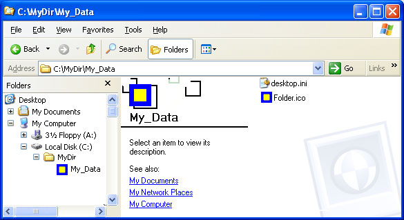
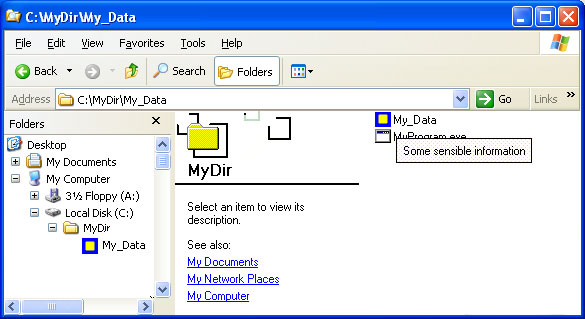
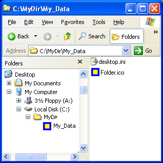

File system folders are commonly displayed with a standard icon and set of properties, which specify, for instance, whether the folder is shared. You can customize the appearance and behavior of an individual folder by creating a Desktop.ini file in that folder to specify different options.
Folders are normally displayed with the standard folder icon. A common use of the Desktop.ini file is to assign a custom icon or thumbnail image to a folder. You can also use Desktop.ini to create an infotip that displays information about the folder and controls some aspects of the folder's behavior, such as specifying localized names for the folder or items in the folder.
Use the following procedure to customize a folder's style with Desktop.ini:
The Desktop.ini file is a text file that allows you to specify how a file system folder is viewed. The [.ShellClassInfo] section, allows you to customize the folder's view by assigning values to several entries:
| Value | Description |
|---|---|
| ConfirmFileOp | Set this entry to 0 to avoid a "You Are Deleting a System Folder" warning when deleting or moving the folder. |
| NoSharing | Not supported under Windows Vista or later. Set this entry to 1 to prevent the folder from being shared. |
| IconFile | If you want to specify a custom icon for the folder, set this entry to the icon's file name. The .ico file name extension is preferred, but it is also possible to specify .bmp files, or .exe and .dll files that contain icons. If you use a relative path, the icon is available to people who view the folder over the network. You must also set the IconIndex entry. |
| IconIndex | Set this entry to specify the index for a custom icon. If the file assigned to IconFile only contains a single icon, set IconIndex to 0. |
| InfoTip | Set this entry to an informational text string. It is displayed as an infotip when the cursor hovers over the folder. If the user clicks the folder, the information text is displayed in the folder's information block, below the standard information. |
The following illustrations are of the Music folder with a custom Desktop.ini file. The folder now:
The folder options in the following illustrations are set to show hidden files so that Desktop.ini is visible. The folder looks like this:

When the cursor hovers over the folder, the infotip is displayed.

The custom icon replaces the folder icon everywhere the folder name appears.

The following desktop.ini file was used to customize the Music folder, as seen in the preceding illustrations.
[.ShellClassInfo]
ConfirmFileOp=0
NoSharing=1
IconFile=Folder.ico
IconIndex=0
InfoTip=Some sensible information.